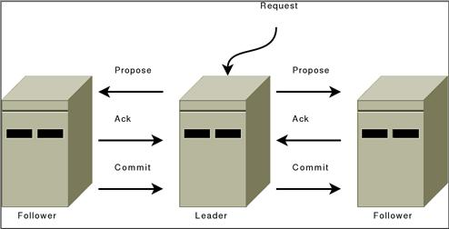

ZooKeeper Internals
Introduction
This document contains information on the inner workings of ZooKeeper. It discusses the following topics:
Atomic Broadcast
At the heart of ZooKeeper is an atomic messaging system that keeps all of the servers in sync.
Guarantees, Properties, and Definitions
The specific guarantees provided by the messaging system used by ZooKeeper are the following:
-
Reliable delivery : If a message
m, is delivered by one server, messagemwill be eventually delivered by all servers. -
Total order : If a message
ais delivered before messagebby one server, messageawill be delivered beforebby all servers. -
Causal order : If a message
bis sent after a messageahas been delivered by the sender ofb, messageamust be ordered beforeb. If a sender sendscafter sendingb,cmust be ordered afterb.
The ZooKeeper messaging system also needs to be efficient, reliable, and easy to implement and maintain. We make heavy use of messaging, so we need the system to be able to handle thousands of requests per second. Although we can require at least k+1 correct servers to send new messages, we must be able to recover from correlated failures such as power outages. When we implemented the system we had little time and few engineering resources, so we needed a protocol that is accessible to engineers and is easy to implement. We found that our protocol satisfied all of these goals.
Our protocol assumes that we can construct point-to-point FIFO channels between the servers. While similar services usually assume message delivery that can lose or reorder messages, our assumption of FIFO channels is very practical given that we use TCP for communication. Specifically we rely on the following property of TCP:
-
Ordered delivery : Data is delivered in the same order it is sent and a message
mis delivered only after all messages sent beforemhave been delivered. (The corollary to this is that if messagemis lost all messages aftermwill be lost.) -
No message after close : Once a FIFO channel is closed, no messages will be received from it.
FLP proved that consensus cannot be achieved in asynchronous distributed systems if failures are possible. To ensure that we achieve consensus in the presence of failures we use timeouts. However, we rely on time for liveness not for correctness. So, if timeouts stop working (e.g., skewed clocks) the messaging system may hang, but it will not violate its guarantees.
When describing the ZooKeeper messaging protocol we will talk of packets, proposals, and messages:
-
Packet : a sequence of bytes sent through a FIFO channel.
-
Proposal : a unit of agreement. Proposals are agreed upon by exchanging packets with a quorum of ZooKeeper servers. Most proposals contain messages, however the NEW_LEADER proposal is an example of a proposal that does not contain to a message.
-
Message : a sequence of bytes to be atomically broadcast to all ZooKeeper servers. A message put into a proposal and agreed upon before it is delivered.
As stated above, ZooKeeper guarantees a total order of messages, and it also guarantees a total order of proposals. ZooKeeper exposes the total ordering using a ZooKeeper transaction id (zxid). All proposals will be stamped with a zxid when it is proposed and exactly reflects the total ordering. Proposals are sent to all ZooKeeper servers and committed when a quorum of them acknowledge the proposal. If a proposal contains a message, the message will be delivered when the proposal is committed. Acknowledgement means the server has recorded the proposal to persistent storage. Our quorums have the requirement that any pair of quorum must have at least one server in common. We ensure this by requiring that all quorums have size (n/2+1) where n is the number of servers that make up a ZooKeeper service.
The zxid has two parts: the epoch and a counter. In our implementation the zxid is a 64-bit number. We use the high order 32-bits for the epoch and the low order 32-bits for the counter. Because zxid consists of two parts, zxid can be represented both as a number and as a pair of integers, (epoch, count). The epoch number represents a change in leadership. Each time a new leader comes into power it will have its own epoch number. We have a simple algorithm to assign a unique zxid to a proposal: the leader simply increments the zxid to obtain a unique zxid for each proposal. Leadership activation will ensure that only one leader uses a given epoch, so our simple algorithm guarantees that every proposal will have a unique id.
ZooKeeper messaging consists of two phases:
-
Leader activation : In this phase a leader establishes the correct state of the system and gets ready to start making proposals.
-
Active messaging : In this phase a leader accepts messages to propose and coordinates message delivery.
ZooKeeper is a holistic protocol. We do not focus on individual proposals, rather look at the stream of proposals as a whole. Our strict ordering allows us to do this efficiently and greatly simplifies our protocol. Leadership activation embodies this holistic concept. A leader becomes active only when a quorum of followers (The leader counts as a follower as well. You can always vote for yourself ) has synced up with the leader, they have the same state. This state consists of all of the proposals that the leader believes have been committed and the proposal to follow the leader, the NEW_LEADER proposal. (Hopefully you are thinking to yourself, Does the set of proposals that the leader believes has been committed include all the proposals that really have been committed? The answer is yes. Below, we make clear why.)
Leader Activation
Leader activation includes leader election (FastLeaderElection). ZooKeeper messaging doesn't care about the exact method of electing a leader as long as the following holds:
- The leader has seen the highest zxid of all the followers.
- A quorum of servers have committed to following the leader.
Of these two requirements only the first, the highest zxid among the followers needs to hold for correct operation. The second requirement, a quorum of followers, just needs to hold with high probability. We are going to recheck the second requirement, so if a failure happens during or after the leader election and quorum is lost, we will recover by abandoning leader activation and running another election.
After leader election a single server will be designated as a leader and start waiting for followers to connect. The rest of the servers will try to connect to the leader. The leader will sync up with the followers by sending any proposals they are missing, or if a follower is missing too many proposals, it will send a full snapshot of the state to the follower.
There is a corner case in which a follower that has proposals, U, not seen by a leader arrives. Proposals are seen in order, so the proposals of U will have a zxids higher than zxids seen by the leader. The follower must have arrived after the leader election, otherwise the follower would have been elected leader given that it has seen a higher zxid. Since committed proposals must be seen by a quorum of servers, and a quorum of servers that elected the leader did not see U, the proposals of U have not been committed, so they can be discarded. When the follower connects to the leader, the leader will tell the follower to discard U.
A new leader establishes a zxid to start using for new proposals by getting the epoch, e, of the highest zxid it has seen and setting the next zxid to use to be (e+1, 0), after the leader syncs with a follower, it will propose a NEW_LEADER proposal. Once the NEW_LEADER proposal has been committed, the leader will activate and start receiving and issuing proposals.
It all sounds complicated but here are the basic rules of operation during leader activation:
- A follower will ACK the NEW_LEADER proposal after it has synced with the leader.
- A follower will only ACK a NEW_LEADER proposal with a given zxid from a single server.
- A new leader will COMMIT the NEW_LEADER proposal when a quorum of followers has ACKed it.
- A follower will commit any state it received from the leader when the NEW_LEADER proposal is COMMIT.
- A new leader will not accept new proposals until the NEW_LEADER proposal has been COMMITTED.
If leader election terminates erroneously, we don't have a problem since the NEW_LEADER proposal will not be committed since the leader will not have quorum. When this happens, the leader and any remaining followers will timeout and go back to leader election.
Active Messaging
Leader Activation does all the heavy lifting. Once the leader is coronated he can start blasting out proposals. As long as he remains the leader no other leader can emerge since no other leader will be able to get a quorum of followers. If a new leader does emerge, it means that the leader has lost quorum, and the new leader will clean up any mess left over during her leadership activation.
ZooKeeper messaging operates similar to a classic two-phase commit.

All communication channels are FIFO, so everything is done in order. Specifically the following operating constraints are observed:
- The leader sends proposals to all followers using the same order. Moreover, this order follows the order in which requests have been received. Because we use FIFO channels this means that followers also receive proposals in order.
- Followers process messages in the order they are received. This means that messages will be ACKed in order and the leader will receive ACKs from followers in order, due to the FIFO channels. It also means that if message
mhas been written to non-volatile storage, all messages that were proposed beforemhave been written to non-volatile storage. - The leader will issue a COMMIT to all followers as soon as a quorum of followers have ACKed a message. Since messages are ACKed in order, COMMITs will be sent by the leader as received by the followers in order.
- COMMITs are processed in order. Followers deliver a proposal message when that proposal is committed.
Summary
So there you go. Why does it work? Specifically, why does a set of proposals believed by a new leader always contain any proposal that has actually been committed? First, all proposals have a unique zxid, so unlike other protocols, we never have to worry about two different values being proposed for the same zxid; followers (a leader is also a follower) see and record proposals in order; proposals are committed in order; there is only one active leader at a time since followers only follow a single leader at a time; a new leader has seen all committed proposals from the previous epoch since it has seen the highest zxid from a quorum of servers; any uncommitted proposals from a previous epoch seen by a new leader will be committed by that leader before it becomes active.
Comparisons
Isn't this just Multi-Paxos? No, Multi-Paxos requires some way of assuring that there is only a single coordinator. We do not count on such assurances. Instead we use the leader activation to recover from leadership change or old leaders believing they are still active.
Isn't this just Paxos? Your active messaging phase looks just like phase 2 of Paxos? Actually, to us active messaging looks just like 2 phase commit without the need to handle aborts. Active messaging is different from both in the sense that it has cross proposal ordering requirements. If we do not maintain strict FIFO ordering of all packets, it all falls apart. Also, our leader activation phase is different from both of them. In particular, our use of epochs allows us to skip blocks of uncommitted proposals and to not worry about duplicate proposals for a given zxid.
Consistency Guarantees
The consistency guarantees of ZooKeeper lie between sequential consistency and linearizability. In this section, we explain the exact consistency guarantees that ZooKeeper provides.
Write operations in ZooKeeper are linearizable. In other words, each write will appear to take effect atomically at some point between when the client issues the request and receives the corresponding response. This means that the writes performed by all the clients in ZooKeeper can be totally ordered in such a way that respects the real-time ordering of these writes. However, merely stating that write operations are linearizable is meaningless unless we also talk about read operations.
Read operations in ZooKeeper are not linearizable since they can return potentially stale data. This is because a read in ZooKeeper is not a quorum operation and a server will respond immediately to a client that is performing a read. ZooKeeper does this because it prioritizes performance over consistency for the read use case. However, reads in ZooKeeper are sequentially consistent, because read operations will appear to take effect in some sequential order that furthermore respects the order of each client's operations. A common pattern to work around this is to issue a sync before issuing a read. This too does not strictly guarantee up-to-date data because sync is not currently a quorum operation. To illustrate, consider a scenario where two servers simultaneously think they are the leader, something that could occur if the TCP connection timeout is smaller than syncLimit * tickTime. Note that this is unlikely to occur in practice, but should be kept in mind nevertheless when discussing strict theoretical guarantees. Under this scenario, it is possible that the sync is served by the “leader” with stale data, thereby allowing the following read to be stale as well. The stronger guarantee of linearizability is provided if an actual quorum operation (e.g., a write) is performed before a read.
Overall, the consistency guarantees of ZooKeeper are formally captured by the notion of ordered sequential consistency or OSC(U) to be exact, which lies between sequential consistency and linearizability.
Quorums
Atomic broadcast and leader election use the notion of quorum to guarantee a consistent view of the system. By default, ZooKeeper uses majority quorums, which means that every voting that happens in one of these protocols requires a majority to vote on. One example is acknowledging a leader proposal: the leader can only commit once it receives an acknowledgement from a quorum of servers.
If we extract the properties that we really need from our use of majorities, we have that we only need to guarantee that groups of processes used to validate an operation by voting (e.g., acknowledging a leader proposal) pairwise intersect in at least one server. Using majorities guarantees such a property. However, there are other ways of constructing quorums different from majorities. For example, we can assign weights to the votes of servers, and say that the votes of some servers are more important. To obtain a quorum, we get enough votes so that the sum of weights of all votes is larger than half of the total sum of all weights.
A different construction that uses weights and is useful in wide-area deployments (co-locations) is a hierarchical one. With this construction, we split the servers into disjoint groups and assign weights to processes. To form a quorum, we have to get a hold of enough servers from a majority of groups G, such that for each group g in G, the sum of votes from g is larger than half of the sum of weights in g. Interestingly, this construction enables smaller quorums. If we have, for example, 9 servers, we split them into 3 groups, and assign a weight of 1 to each server, then we are able to form quorums of size 4. Note that two subsets of processes composed each of a majority of servers from each of a majority of groups necessarily have a non-empty intersection. It is reasonable to expect that a majority of co-locations will have a majority of servers available with high probability.
With ZooKeeper, we provide a user with the ability of configuring servers to use majority quorums, weights, or a hierarchy of groups.
Logging
Zookeeper uses slf4j as an abstraction layer for logging. Logback is chosen the logging backend since ZooKeeper version 3.8.0. For better embedding support, it is planned in the future to leave the decision of choosing the final logging implementation to the end user. Therefore, always use the slf4j api to write log statements in the code, but configure logback for how to log at runtime. Note that slf4j has no FATAL level, former messages at FATAL level have been moved to ERROR level. For information on configuring logback for ZooKeeper, see the Logging section of the ZooKeeper Administrator's Guide.
Developer Guidelines
Please follow the slf4j manual when creating log statements within code. Also read the FAQ on performance, when creating log statements. Patch reviewers will look for the following:
Logging at the Right Level
There are several levels of logging in slf4j.
It's important to pick the right one. In order of higher to lower severity:
- ERROR level designates error events that might still allow the application to continue running.
- WARN level designates potentially harmful situations.
- INFO level designates informational messages that highlight the progress of the application at coarse-grained level.
- DEBUG Level designates fine-grained informational events that are most useful to debug an application.
- TRACE Level designates finer-grained informational events than the DEBUG.
ZooKeeper is typically run in production such that log messages of INFO level severity and higher (more severe) are output to the log.
Use of Standard slf4j Idioms
Static Message Logging
LOG.debug("process completed successfully!");
However when creating parameterized messages are required, use formatting anchors.
LOG.debug("got {} messages in {} minutes",new Object[]{count,time});
Naming
Loggers should be named after the class in which they are used.
public class Foo {
private static final Logger LOG = LoggerFactory.getLogger(Foo.class);
....
public Foo() {
LOG.info("constructing Foo");
Exception handling
try {
// code
} catch (XYZException e) {
// do this
LOG.error("Something bad happened", e);
// don't do this (generally)
// LOG.error(e);
// why? because "don't do" case hides the stack trace
// continue process here as you need... recover or (re)throw
}